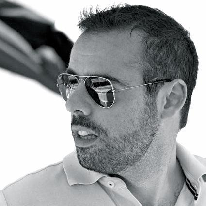

<section id="about">
<div class="container">

  <div class="row">
    <div class="col-sm-6 col-xs-12 text-center">
      </img>
    </div>
    <div class="col-sm-6 col-xs-12">
      <h2 class="section-title">I am <br />Elefth&eacute;rios</h2>

      <p class="lead">For well over a decade I have been delivering high quality software
      for businesses in diverse industries and sectors.</p>
      
      <p>I am a goal-oriented professional, committed in
      delivering software that meets the needs of its users by leveraging agile
      methods and practices. I earned my B.Sc. in computer science from University
      of Indianapolis, I am married and live in Athens, Greece. Occasionally,
      I post technical articles at <a href="http://engineering.pamediakopes.gr/authors/Lefteris+Laskaridis" target="_blank">eTravel engineering blog</a>.</p>
    </div>
  </div>
</div>
</section>
